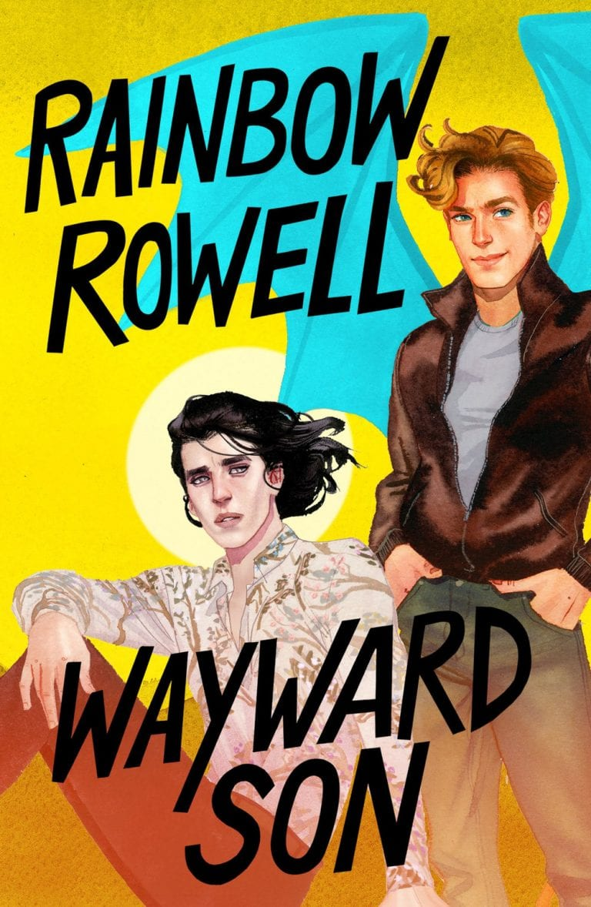

The Revisioners by Margeret Wilkerson SextonTwo women’s lives intersect in this story that was historically inspired. In 1925, Josephine has freed herself from slavery and owns a farm. She becomes friendly with her white neighbor but the relationship is strained. A hundred years later, Josephine’s descendant Ava is struggling as a single mother who has just lost her job. When she moves in with her white grandmother, the situation becomes dangerous for Ava and her daughter. Discover how these two women’s lives converge in The Revisioners. Olive, Again by Elizabeth StroutOver a decade later, Elizabeth Strout brings readers more of her beloved Olive Kitteridge character in this new book. Set in Crosby, Maine, Olive tries to not only understand herself but those who live around her. A teenager who’s lost her father, a pregnant woman about to have her baby, a high school crush revealed and more – see it all through Olive’s eyes in moments that will truly inspire and move you. Wayword Son by Rainbow RowellSimon Snow beat the villain and accomplished his big goal. So now what? According to his best friend, he needs to do something that breaks him out of his comfort zone so the two set off on a road trip across the American West. But the two run along to big trouble along the way and at some point, they get so lost, they forget why they even began this new adventure in the first place. Because You're Mine by Rea FreyLee is a single mother with a steadfast routine to keep her autistic son Mason safe and content. When her best friend Grace convinces her she needs a weekend to herself, Lee decides one weekend away from Mason will be okay. When she enlists the help of Mason’s tutor, Noah, to watch him for the weekend, she never expected someone to end up dead. Are Grace, Noah and Lee keeping secrets that have put Mason in danger? The Dutch House by Ann PatchettWhen Cyril Conroy invested all he had into a risky investment, he had no idea how it would change his life for the better. With his newfound wealth, Cyril builds a beautiful home to surprise his wife. But before long, his wife has banned his children from living in the house and because of this, Cyril’s two kids go back to living in poverty, with nothing but their unshakeable bond. Told over the course 50 years, The Dutch House tells the story of two people who, no matter their accomplishments, can’t escape their nightmarish past. In the Dream House: A Memoir by Carmen Maria MachadoAuthor Carmen Maria Machado shares her account of an abusive relationship with a volatile woman, and does so in a unique way, structuring the narrative in familiar tropes. She tells of her religious upbringing and examines stereotypes of lesbian relationships. This is a riveting memoir that will enlighten and engage readers. |